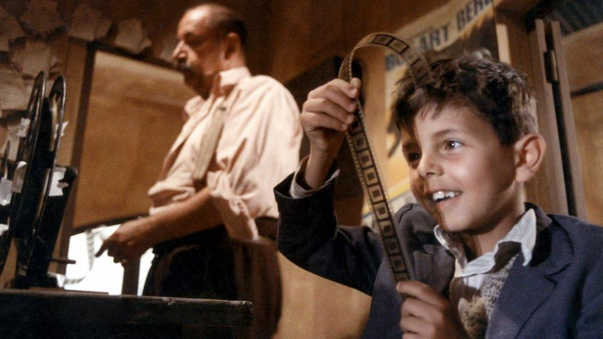

Cinema Paradiso. Amar el cine.
Hace poco sufrimos la pérdida de Philippe Noiret, y un servidor al igual que muchos aficionados, o eso me gustaría suponer, se ha acordado irremediablemente del personaje que encarnó en 'Cinema Paradiso', el proyeccionista de un cine, Alfredo. Como ya habían pasado muchos años desde la última vez que la vi, decidí que era un buen momento para volver a aguantarla, y cuando uso el verbo aguantar no estoy queriendo decir ni sugerir que el film me haya parecido malo. Cuando uso ese verbo me refiero a que otra vez tendría que reprimir las enormes ganas de llorar que me entran cuando veo esta película, sobre todo en su tercio final. Cualquier cinéfilo que se precie de serlo se habrá dejado enamorar en todos los aspectos por una de las más grandes obras maestras del Cine de los últimos 20 años. El enorme amor que la película dirigida por Giuseppe Tornatore demuestra hacía el Séptimo Arte, es a todas luces, uno de los más grandes homenajes hacia el Cine que se hayan hecho jamás.
Mi cariño hacia este film va todavía más allá, ya que durante tres años de mi vida me dediqué a trabajar en la cabina de un ya desaparecido cine de mi ciudad. Ver lo que acontece en la cabina del Paradiso no sólo me emociona porque me conozco todo lo que el personaje hace, sino porque me trae unos recuerdos emocionantes e imborrables a mi memoria. Eso no debería influirme para criticar una película que sin necesidad de que me recuerde una época de mi vida, la considero perfecta de principio a fin. Algún día contaré mis experiencias en dicha cabina, enumerando los "accidentes" que en ella ocurrían, tantos aquellos que terminaron siendo anécdotas graciosas como aquellos que sería mejor no contar.
Supongo que a estas alturas el argumento de la película os lo conoceis todos, incluso los que aún no la habeis visto. A modo de flashback un hombre recuerda su infancia y juventud en un pequeño pueblo italiano en el que llegó a trabajar en la cabina del cine, forjándose una amistad inquebrantable con operador de la misma, Alfredo, un ser solitario y entrañable que tratará a Totó (así se llama nuestro protagonista) como si fuera el hijo que nunca tuvo. Pasarán los años y con ellos la vida, el cine y la vida, el amor, el cine y el amor....
Y es que si hay algo en esta película que está muy bien retratado y mostrado es el paso del tiempo. Tres épocas totalmente distintas en un mismo lugar. Cuando nuestro protagonista es un niño, llena de momentos cómicos muy típicos del cine italiano y desprendiendo una alegría por vivir radiante y contagiosa. Cuando nuestro protagonista es un adolescente y las primeras gotas de amargura vienen cuando se enamora por primera vez. Y evidentemente cuando nuestro protagonista es un adulto y de vuelta a ese pueblo tan importante para él, descubre que el tiempo no perdona a nadie y que nuestro fin es irremediable, como el mismo que sufre el Cine Paradiso. Tres partes muy bien diferenciadas e inteligentemente intercaladas con algunos planos del protagonista recordando.
Tornatore dirige con la sensibilidad de un maestro, y sobre todo teniendo un esmerado cuidado y sitiendo un enorme respeto y amor por el Cine, al que no se cansa de homenajear durante toda la película ya sea mediante la profesión misma de proyeccionista, o mediante escenas de películas clásicas, reconocibles para todo cinéfilo, en la pantalla del cine. También se permite el grandioso lujo de filmar las reacciones de un público muy distinto entre sí, un público profundamente emocionado cuando no había otra cosa para distraerse más que una sala de cine donde historia de todos los tipos y procedentes de todos los lugares hacían soñar a los habitantes del lugar. Es memorable ver reir a la gente en una proyección de Chaplin o verlos llorar en un dramón, mientras alguno del público recita las frases del diálogo porque ya se ha visto la película varias veces, y aún así sigue llorando. Esa es la magia del Cine.
La figura del censor tiene también un papel muy especial en esta película. Aquí viene personificada en un cura (¡cómo no!) que se ve las películas antes de estrenarlas y "sugiere" que todos los besos que salgan en panatalla se corten ya que los considera pornográficos. Sublime la reacción del público cuando eso no sucede por vez primera. Como sublimes son otros momentos de especial consideración y sin desvelar nada, citar aquél en el que Alfredo resuelve el problema de que no toda la gente puede ver la película porque la sala está a tope. Dicho momento es, sin dudarlo, uno de los más grandes de toda la Historia del Cine, porque, una vez más, la magia vuelve a hacer efecto, y esta vez desde la propia cabina de proyección.
Respecto a los actores decir que están todos fantásticos. Desde Philippe Noiret. en el que probablemente sea el papel más famoso de su carrera, pasando por un enormemente expresivo Salvatore Cascio, que interpreta a Totó niño, y terminando en Jacques Perrin que interpreta a Totó adulto y en cuyo rsotro se ve fácilmente el paso inexorable del tiempo. Todos ellos bailan de forma prodigiosa por el film, y digo bailan, porque esta película no sería la misma sin la grandísima banda sonora compuesta por Ennio Morricone, salvo el 'Love Theme' que está compuesto por su hijo Andrea. Viendo la película el pasado domingo, las maravillosas y reconocibles notas de su partitura aún resuenan en mi caneza, y todos aquellos que esteis engachados a la estúpida televisión actual la podreis escuchar en un famoso anuncio que empiezan a emitir ya por estas fechas. Por cierto, es imperdonable que Morricone aún no tenga ningún Oscar y haya sido nominado muy pocas veces.
Hay una frase que para mí resume toda la película de forma increíble. En un momento dado el personaje de Noiret le dice a Totó adolescente: "Hagas lo que hagas ámalo, como amabas la cabina del Paradiso". Es para mí el momento más emotivo del film y donde me rindo finalmente. Apoyado, cómo no, en la contastación de esas palabras que toman forma en la magistral secuencia final en la que todo aquel que la haya visto, si se considera humano, habrá derramado lágrimas. Es el único final posible. ¿Cómo se expresa más fácilmente el amor? con un beso. ¿Qué le inculca Alfredo a Totó durante toda su vida y qué le regala? Amor ¿Cómo? como mejor sabe y como mejor va a entenderlo Totó. Porque el amor lo es todo. Y pocas veces unos besos tuvieron tanto significado en una película. Adios Alfredo. Y gracias.
